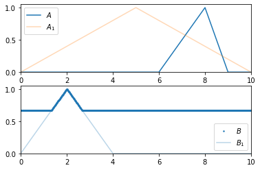

Rule¶
- class floulib.Rule¶
Bases:
PlotThis class contains methods to define and use a rule.
- inference(*args, **kwargs)¶
Computes the image of a fuzzy subsets by a rule.
- Parameters:
*args (Variable) – Antecedents.
**kwargs (Operator| bool) –
R: the implication operator. Default is
Operator.R_KD().T: the modus ponens triangular norm. Default is
Operator.T_Z().T1: the triangular norm to combine antecedents. Default is
Operator.T_Z().time: If True, the computing time for the inference is displayed. Default is False.
- Returns:
The result.
- Return type:
Example
>>> from floulib import Term, Triangle, Rule, Variable >>> import numpy as np >>> A1 = Term('A1', Triangle(0, 5, 10, label = '$A_1$')) >>> B1 = Term('B1', Triangle(0, 2, 4, label = '$B_1$')) >>> v1 = Variable(np.linspace(0,15, 1000)) >>> v2 = Variable(np.linspace(0, 10, 1000)) >>> R = Rule().If(v1.Is(A1)).Then(v2.Is(B1)) >>> A = Triangle(6, 8, 9).label('$A$') >>> B = R.inference(v1.Is(A)).label('$B$') >>> A.plot(nrows = 2, xlim = [0,10]).add_plot(A1, alpha = 0.3).add_plot(B, xlim = [0,4], index= 1).add_plot(B1, index = 1, alpha = 0.3)
- If(*args)¶
Defines the If part of a rule.
- Then(ruleThen)¶
Defines the Then part of a rule.